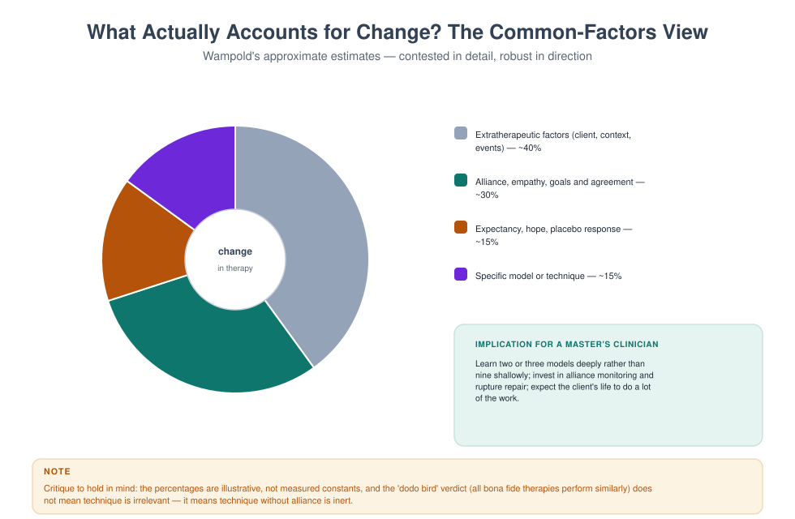

MFT 725 — Integrative Approaches in Therapy
Course leader's summary. Most experienced clinicians are integrative, whether or not they say so. The question is whether the integration is disciplined or accidental. This course builds a principled framework for combining models without producing incoherence, and teaches you to justify every combination.
How to use this book
Integration is a design problem, not a mood. Each week adds a dimension to a framework you will use for the rest of your career. By Week 14 you will have a written integrative framework, tested on three cases, and defended in a viva.
1. Course description
The course covers: the varieties of integration (assimilative, theoretical, sequential, pluralistic); common factors and their implications; the major dimensions of family therapy (systemic, attachment, behavioural, experiential, cognitive, narrative, biological); decision frameworks for matching model to client and phase; feedback-informed treatment; staged and stepped care; and the risks of eclecticism.
2. Learning outcomes
| # | Outcome | Assessed |
|---|---|---|
| LO1 | Distinguish the forms of integration and their assumptions | Exam |
| LO2 | Explain common factors and use them to justify technique selection | Exam |
| LO3 | Construct a coherent integrative formulation for a complex case | Case study |
| LO4 | Sequence models across phases with an explicit rationale | Treatment plan |
| LO5 | Use routine outcome monitoring and feedback to guide integration | Portfolio |
| LO6 | Avoid incoherence and demonstrate coherence to a supervisor | Viva |
| LO7 | Articulate a personal integrative framework | Framework paper |
3. Assessment
| Component | Weight | Due |
|---|---|---|
| Integrative case study (2,500 words) | 35% | Week 8 |
| Treatment plan with sequenced models (1,500 words) | 25% | Week 11 |
| Outcome monitoring portfolio | 15% | Week 13 |
| Framework paper and viva (2,000 words) | 25% | Week 14 |
4. The fourteen-week plan
| Week | Topic | Practical |
|---|---|---|
| 1 | Why integrate: evidence, clients, and clinicians | Integration audit of your own practice |
| 2 | Forms of integration | Mapping four forms onto a case |
| 3 | Common factors and their clinical use | Common-factors observation |
| 4 | The systemic dimension | Systemic formulation |
| 5 | The attachment dimension | Attachment-informed plan |
| 6 | The behavioural and cognitive dimensions | Skills module design |
| 7 | The experiential and narrative dimensions | Emotion and meaning work |
| 8 | Case study due; the biological dimension | Medication-aware plan |
| 9 | Matching, sequencing and staging | Sequence design |
| 10 | Outcome monitoring and feedback-informed treatment | ORS/SRS practice |
| 11 | Treatment plan due; comorbidity and complexity | Complex case lab |
| 12 | Culture, values and the ethics of integration | Values audit |
| 13 | Portfolio due; coherence and supervision | Coherence defence |
| 14 | Framework paper and viva | Assessed |
Week 1 — Why integrate
Three pressures.
- Evidence. No single model is superior for everything. Different models have stronger evidence for different problems (FBT for adolescent anorexia, EFT for couple distress, PMT for conduct problems, family psychoeducation for psychosis).
- Clients. Real families present with multiple, interacting problems: trauma plus addiction plus couple distress plus a child's school refusal.
- Clinicians. Most experienced therapists drift towards integration as their caseload diversifies.
The danger. Integration without discipline becomes eclecticism: a technique for every mood, no coherent theory of change, and a client who cannot tell what is expected of them.

Week 2 — Forms of integration
| Form | Definition | Example | Risk |
|---|---|---|---|
| Assimilative | A home model, enriched by techniques from elsewhere | EFT therapist borrowing a behavioural task | Drift from the core theory |
| Theoretical | A new model synthesising several | Integrative behavioural couples therapy | Complexity, training burden |
| Sequential | Different models at different phases | Structural stabilisation, then EFT | Discontinuity for the family |
| Parallel | Different models for different subsystems | Couple work + individual trauma work | Splitting between clinicians |
| Pluralistic | Collaborating with the client on method | "Which approach fits you?" | Requires an informed client |
Choosing a form. Assimilative integration is the most realistic for a newly qualified clinician: it keeps coherence while allowing flexibility. Sequential and parallel integration are appropriate for complexity. Pluralistic practice is an ethical stance as much as a technique.
Week 3 — Common factors
The claim. Much of psychotherapy's effect comes from factors shared across models: the alliance, agreement on goals, therapist empathy, client expectancy, and extratherapeutic factors.
The clinical use — without relativism.
- Monitor the alliance in every session, with every family member.
- Repair ruptures quickly; the repair is often more powerful than the original intervention.
- Agree goals explicitly; disagreement about goals predicts drop-out.
- Engender hope honestly (not false reassurance).
- Then use techniques — which matter most for specific problems and for structuring the work.
The critique. Percentages attributed to common factors are illustrative, not measured; "all models are equal" is over-stated; and technique does matter for specific disorders. The defensible position: the alliance is necessary but not sufficient; technique without alliance is inert; alliance without technique is often insufficient.
Week 4 — The systemic dimension
What it contributes. Attention to pattern, structure, triangles, context and power. It tells you where to look and what maintains the problem.
What it lacks alone. Specific techniques for symptom change; guidance for individual emotion and trauma; and a sufficient account of biology.
Integration in practice. Systemic formulation + any intervention. You can use a behavioural task, an EFT enactment, or a narrative externalising conversation, provided the systemic formulation justifies it.
Week 5 — The attachment dimension
What it contributes. A developmental account of why bonds matter; a map of strategies under threat; a mechanism for change (corrective emotional experience, enacted in the room).
Integration with systemic work. Systemic thinking tells you the loop; attachment tells you why the loop matters so much and what each person is asking for.
Integration with behavioural work. Behavioural tasks build positive exchange; attachment work deepens the meaning of the exchange. Alone, either can be shallow.
Week 6 — The behavioural and cognitive dimensions
What they contribute. Specific, testable, teachable skills; measurable change; homework; structure; and a strong evidence base for many problems.
Integration cautions. Behavioural work can feel mechanical when the emotional bond is damaged; cognitive restructuring can be premature in acute trauma; and skills practice without meaning can become performance.
A practical sequence. Stabilise and structure (behavioural) → access emotion and meaning (experiential, attachment) → consolidate with skills and plans (behavioural, cognitive).
Week 7 — The experiential and narrative dimensions
What they contribute. Access to primary emotion; meaning-making; identity; and the language of the family's own story.
Integration. Experiential work deepens the emotional field; narrative work organises it into a story the family can hold. Together they answer "what do we feel?" and "what does it mean?".
Caution. Emotional work without containment can flood; narrative work without emotion can become intellectual. The integration is in the pacing.
Week 8 — The biological dimension
What it contributes. Sleep, medication, substances, hormonal change, illness, and the physiology of stress and trauma.
Integration. A formulation that ignores biology will fail in predictable ways: the depressed client who does not respond to therapy because of untreated hypothyroidism; the couple whose sexual problem is a medication side effect; the adolescent whose sleep deprivation mimics ADHD.
Your role. Screen, refer, coordinate, and never advise on medication.
Week 9 — Matching, sequencing and staging
Decision framework — five questions.
- What is the most dangerous thing here? (Risk governs sequence.)
- What is the most changeable thing here? (Start where change is possible; hope is built on early wins.)
- What must be in place before other work can happen? (Safety, stabilisation, attendance, sobriety.)
- Which model has the best evidence for the primary problem? (Use it, or refer.)
- What does this family want and believe in? (Engagement is a precondition, not a luxury.)
Staging example. A couple with active violence, alcohol misuse, and a child's school refusal: Phase 1 — safety and sobriety (individual, specialist referral); Phase 2 — couple de-escalation and parenting plan; Phase 3 — child's return to school and family consolidation.
Week 10 — Feedback-informed treatment
The instruments. The Outcome Rating Scale (ORS) and Session Rating Scale (SRS) are brief, free, and practical: four visual analogue items each, completed every session.
How to use them.
- Introduce them as a way of making sure the therapy is working.
- Look at the scores before you speak.
- Ask about a drop: "Your score fell by three points. What happened?"
- Ask about the alliance: "Is there anything about how we work that is not fitting?"
- Act on the answer in the session, not next month.
The evidence. Routine outcome monitoring with feedback improves outcomes and reduces deterioration, particularly for clients who are not progressing. It is one of the most robust findings in the field.
Week 11 — Comorbidity and complexity
Complexity is the norm. Typical community caseloads include trauma plus substance use plus couple distress plus child behaviour plus financial strain.
Principles.
- Formulate the whole system, not a list of diagnoses.
- Identify the keystone: the one change that would make others possible.
- Sequence: safety → stabilisation → skills → processing → consolidation.
- Share the load: refer where specialist input is needed; coordinate rather than compete.
- Review: complexity requires more frequent review, not longer sessions.
Week 12 — Culture, values and the ethics of integration
Culture shapes which models fit. An approach that prizes emotional expressiveness may feel exposing; one that prizes autonomy may feel cold; one that requires homework may be impractical.
Values shape technique choice. Your beliefs about gender, family duty, forgiveness and individual autonomy will show up in what you emphasise. Audit them.
Ethical integration. Do not use a technique you are not trained in; do not combine models to appear sophisticated; and do not use integration as a reason to avoid referring.
Week 13 — Coherence
The coherence test.
| Question | If the answer is no… |
|---|---|
| Can I state the formulation in three sentences? | You do not have one yet |
| Does every intervention follow from the formulation? | You are improvising |
| Can I name the model I am using at this moment? | You are drifting |
| Can I predict what will happen next, and be wrong productively? | Your formulation is too vague |
| Would a supervisor understand my reasoning without me explaining it? | Document it |
The coherence defence. Present a case to peers and answer: what are you doing, why, and how will you know whether it worked?
Week 14 — Your integrative framework
Write 2,000 words:
- Your home model and its theory of change.
- The dimensions you integrate (systemic, attachment, behavioural, experiential, narrative, biological).
- Your decision rules for matching and sequencing.
- Your use of feedback and outcome data.
- Your limits: what you do not do, and to whom you refer.
- How you will know you are drifting.
Defend it in a viva.
Glossary
Assimilative integration — a home model enriched by techniques from elsewhere. Common factors — mechanisms shared across therapies (alliance, empathy, expectancy, goals). Feedback-informed treatment — using session-by-session outcome and alliance data to adjust therapy. Keystone change — a change that makes other changes possible. Pluralistic practice — collaborating with the client to choose methods. Sequential integration — using different models at different phases of treatment. Stepped care — matching intensity of intervention to need.
Self-assessment
Multiple choice
1. The main risk of undisciplined integration is: (a) cost (b) incoherence for the family (c) slow progress (d) paperwork
2. Assimilative integration means: (a) equal blending (b) a home model enriched by borrowed techniques (c) alternating models by session (d) refusing a model
3. Common factors research suggests: (a) technique is irrelevant (b) alliance matters greatly and technique matters for specific problems (c) all models are identical (d) diagnosis is useless
4. The first question in sequencing is: (a) what is most interesting (b) what is most dangerous (c) what is cheapest (d) what the therapist prefers
5. Feedback-informed treatment uses: (a) long questionnaires (b) brief session-by-session measures such as ORS/SRS (c) only diagnosis (d) supervisor ratings
6. A keystone change is: (a) the first session (b) a change that makes others possible (c) a diagnosis (d) a referral
7. The dimensional approach includes all except: (a) systemic (b) attachment (c) behavioural (d) astrological
8. Integration is unethical when it involves: (a) borrowing a technique (b) using techniques outside your competence (c) sequencing models (d) monitoring outcomes
9. Coherence is demonstrated by: (a) using many techniques (b) a formulation from which interventions follow (c) longer sessions (d) confidence
10. Complexity should lead to: (a) longer sessions (b) more frequent review and coordination (c) more diagnoses (d) abandoning formulation
Answer key
1 b · 2 b · 3 b · 4 b · 5 b · 6 b · 7 d · 8 b · 9 b · 10 b
Short answer
- Distinguish four forms of integration with an example of each.
- Give three clinical uses of common-factors research.
- State the five sequencing questions.
- How do you use ORS/SRS data in a session?
- What are three ethical limits on integration?
Essay (choose one, 2,000 words)
- "Integration without a theory of change is improvisation." Discuss with a case.
- Design an integrative treatment plan for a family with trauma, addiction and couple distress.
- Critically evaluate feedback-informed treatment as a professional standard.
Further reading
- Lebow, J. L. (2014). Couple and Family Therapy: An Integrative Map of the Territory. APA.
- Sprenkle, D. H., Davis, S. D., & Lebow, J. L. (2009). Common Factors in Couple and Family Therapy. Guilford.
- Duncan, B. L., Miller, S. D., & Sparks, J. A. (2004). The Heroic Client. Jossey-Bass.
- Norcross, J. C., & Goldfried, M. R. (Eds.). (2019). Handbook of Psychotherapy Integration (3rd ed.). OUP.